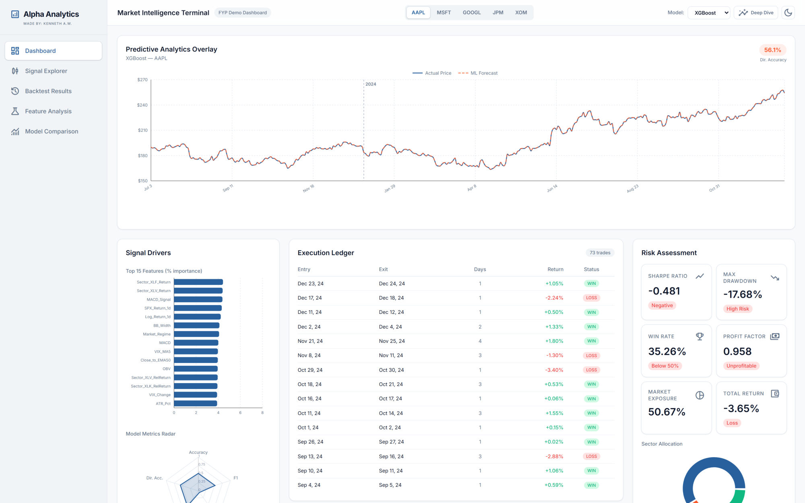
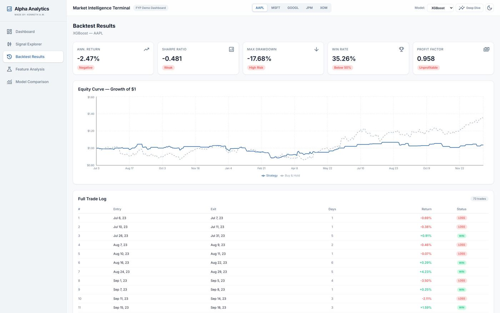
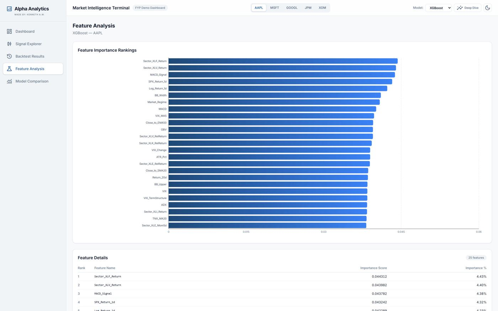
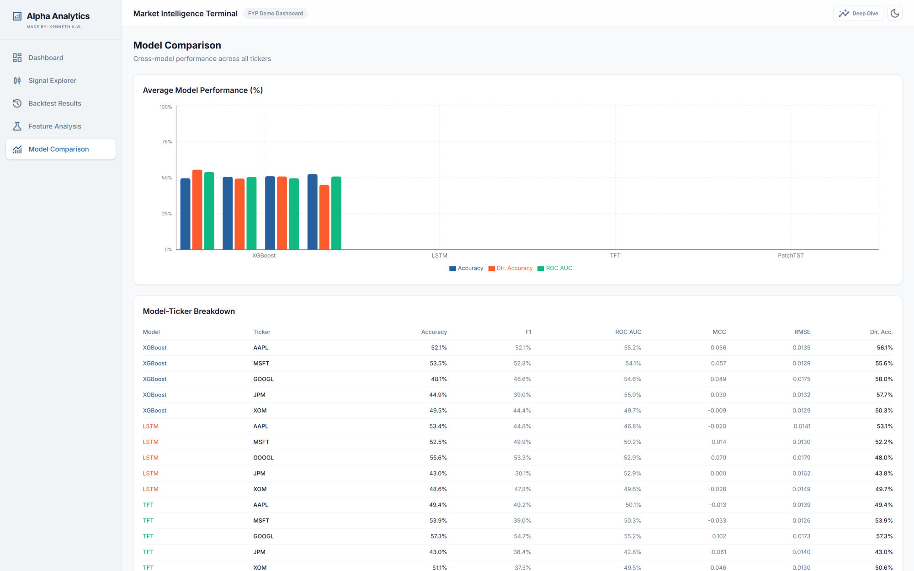
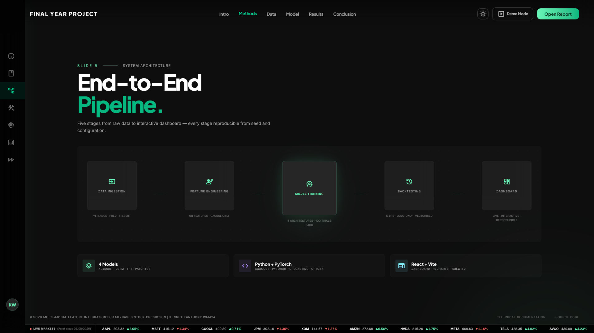
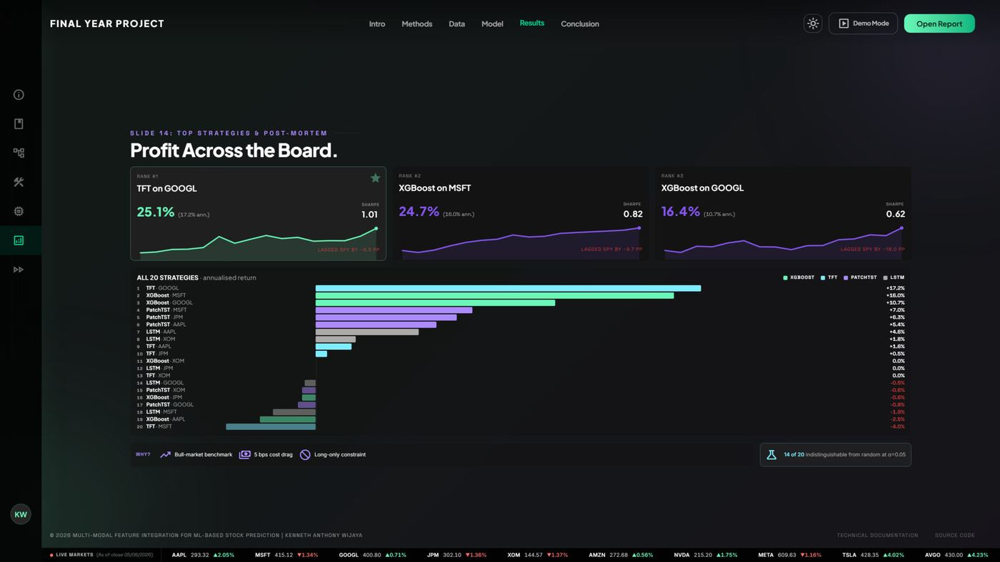
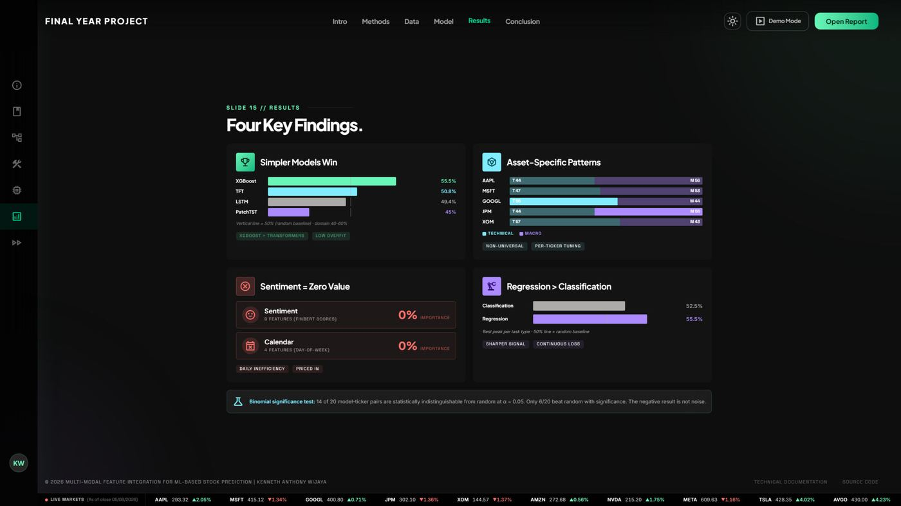

MSc Risk Management & Financial Engineering at Imperial College London, after a First Class
BEng in Electrical & Electronic Engineering at NTU. I have supported live bond, sukuk and rights-issue deals in
Jakarta, and built an end-to-end machine learning pipeline to test whether markets can be beaten after costs.
CGPA, First Class Honours, Electrical & Electronic Engineering, NTU
3×
Dean’s List, top 5% of the cohort, on the ASEAN Undergraduate Scholarship
8+
Live capital-markets transactions supported as an Investment Banking Summer Analyst
55.5%
Best next-day directional accuracy in my machine learning research across five large caps
01 — About
Trained as an engineer. Drawn to markets.
I grew up in Indonesia and took the ASEAN Undergraduate Scholarship to Nanyang Technological
University, where I graduated with First Class Honours in Electrical and Electronic Engineering and made the
Dean’s List three times.
Along the way I found that the problems I enjoyed most were financial ones: pricing a deal, sizing a
risk, testing whether a signal survives contact with real costs. That took me to a summer in investment
banking and a winter in middle-market credit in Jakarta, to a final-year project on machine learning for
trading, and now to Imperial College London for an MSc in Risk Management and Financial Engineering.
Outside work I invest in equities and options, play poker and badminton, and travel whenever term allows.
01
Deal execution
Eight-plus live capital-markets transactions at Aldiracita Securities: prospectuses, information documents, internal memoranda and underwriting tenders, with the financials reconciled line by line.
02
Quant research, end to end
A 72-feature pipeline, four model architectures and a cost-aware backtester, built from scratch and benchmarked honestly against buy-and-hold.
03
Engineering fundamentals
Python, C++, SQL and PyTorch, with the habits of an engineering degree: reproducible experiments, fixed seeds, chronological splits and no leakage.
Based in
London, United Kingdom
Currently
MSc Risk Management & Financial Engineering, Imperial College London, 2026–27
Open to
2027 graduate roles in investment banking, markets and quantitative finance, on London, Singapore or Hong Kong desks
Languages
English, Bahasa Indonesia, Mandarin
02 — Experience
Deals, credit and the numbers behind them.
Capital markets execution, counterparty credit and financial evaluation across Jakarta and Singapore.
Jun – Aug 2026Jakarta, Indonesia
Aldiracita Securities
Investment Banking Summer Analyst
Deal execution across corporate bonds, sukuk and rights issues.
Supported 8+ live capital-markets transactions, contributing to prospectuses, additional information documents, internal memoranda and underwriting tender submissions.
Ran financial statement analysis, ratio work, capital structure reviews and transaction benchmarking to support credit assessment, deal structuring and investor materials.
Reconciled offering terms, historical financials, shareholder data and disclosures across every deal document so nothing drifted between drafts.
Dec 2025Jakarta, Indonesia
Maybank Securities
Middle Market Intern
Repo credit analysis for middle-market counterparties.
Prepared repurchase-agreement credit reports, assessing counterparty creditworthiness with Altman Z-Score, DuPont analysis and ratio diagnostics.
Analysed profitability, leverage, liquidity and cash flow to support collateral and counterparty risk decisions.
Jun – Dec 2024Singapore
Singtel
Energy & Sustainability Intern
Cost-benefit analysis for a new data centre.
Modelled the return on energy-saving initiatives at the new Tuas Data Centre with engineering, procurement and finance, to test budget feasibility.
Analysed temperature and humidity data to optimise climate-control strategy and identify operating-cost reductions.
Reported sustainability and financial metrics to senior management to inform capital expenditure decisions.
03 — Selected work
Built end to end. Reported honestly.
A full quant research pipeline with a dashboard you can drive, and a market-making bot from a trading competition.
Final-year project · NTU EEE · Aug 2025 – May 2026
Can machine learning beat buy-and-hold after costs?
Five large-cap US stocks, ten years of data and one question answered with a 72-feature pipeline, four competing models and a backtester that charges friction before it reports a number.
Can next-day predictions from machine learning generate risk-adjusted profit that beats simply holding SPY, once realistic transaction costs are charged? Universe: AAPL, MSFT, GOOGL, JPM and XOM, 2015 to 2024.
The approach
27 technical indicators, 32 macro series, 9 FinBERT sentiment features and 4 calendar effects, split chronologically 70/15/15. XGBoost, LSTM, a Temporal Fusion Transformer and PatchTST competed on identical data. A vectorised backtester traded the signals with a 0.55 confidence gate, return-driven sizing, stop-loss and take-profit rules, and 5 basis points per side.
The result
XGBoost led on directional accuracy at 55.5%, beating transformers with 60× more parameters. The best strategy made 17.2% annualised at a Sharpe of 1.02 net of costs. None beat SPY’s 23.4% over the 2023–24 rally, a result that held even at zero cost and one I report straight.
72
features across four modalities
4×5
architectures benchmarked over five tickers
100
Optuna trials per ticker for XGBoost
6/20
strategies significant at the 5% level
Four findings
Simpler models won. On low signal-to-noise daily data, the inductive bias of gradient boosting beat raw capacity.
Signal is asset-specific. Feature importance split differently per ticker, so per-ticker tuning beat one universal feature set.
News is priced in by the close. Daily sentiment and calendar features received 0% importance across all five names.
Regression beat classification. Predicting the continuous log return produced a sharper trading signal than a binary up-or-down label.

01Dashboard: forecast overlay, signal drivers, execution ledger

02Backtest results: equity curve against buy-and-hold, full trade log

03Feature analysis: importance rankings per model and ticker

04Model comparison across all twenty model-ticker pairs

05From the deck: the end-to-end pipeline

06From the deck: profit across the board

07From the deck: four key findings
Limitations I documented: a five-ticker universe, daily data only, long-only strategies, no slippage model beyond the 5 bps charge, and a single chronological split. The report says so on the slide before the conclusions.
A Python auto-trader built on the Avellaneda–Stoikov model for a simulated ETF market. The bot quotes around a reservation price that shifts with its inventory, widens its spread with volatility and risk aversion, and re-quotes as the book moves, earning the spread while keeping inventory near zero.
Reservation price adjusted continuously for inventory
Spread set from volatility and risk aversion, not a fixed tick
Consistent positive returns across the simulated sessions
Python · Market making · High-frequency execution
Cat vs Dog image classifier Deep learning classifier for NTU’s Artificial Intelligence and Data Mining module, 2025.
BEng (Hons) Electrical & Electronic Engineering, specialising in Computing & Intelligent Systems
First Class Honours, CGPA 4.85/5.00. ASEAN Undergraduate Scholarship. Dean’s List in 2022/23, 2024/25 and 2025/26. Modules included Business Finance, Data Structures & Algorithms, and Artificial Intelligence & Data Mining.
Dec 2024Guangzhou, China
Sun Yat-sen University
Winter exchange programme in economics.
Further coursework
Portfolio Optimisation with the Markowitz Model (Coursera), DCF Modelling (Coursera), DeFi Infrastructure (Duke University).
05 — Skills
The toolkit.
Programming & tools
Python
C++
SQL
PyTorch
XGBoost & Optuna
pandas
React & TypeScript
Git
Bloomberg Terminal
Finance
Financial statement analysis
Credit analysis
Capital markets execution
DCF modelling
Portfolio optimisation
Backtesting
Market making
Languages
English, full professional
Bahasa Indonesia, native
Mandarin, limited working
Studying now at Imperial
Stochastic Calculus
Market Microstructure
Portfolio Management
Financial Statistics
Private Equity & VC
06 — Leadership
Beyond the classroom.
Aug 2024 – Aug 2025
NTU EEE Club
Student Development Committee
Organised industry visits and talks with Huawei, STMicroelectronics and Infineon, connecting students with corporate representatives.
Aug 2023 – Aug 2024
NTU Indonesian Students’ Association
Public Relations Director
Led a ten-person committee and ran the promotional campaigns that lifted attendance at major association events by 57%.
07 — Contact
Start a conversation.
Graduate opportunities, quant research, or anything on this page. Email is the fastest way to reach me, and I reply to everything.
Investment banking, markets and quantitative finance. Open to London, Singapore and Hong Kong desks.
Right to work
UK student visa now, and eligible for the Graduate Route after the MSc. Also eligible for Singapore’s Work Holiday Pass and Hong Kong’s Top Talent Pass Scheme.